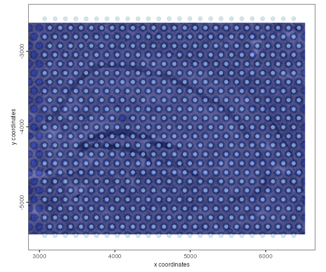
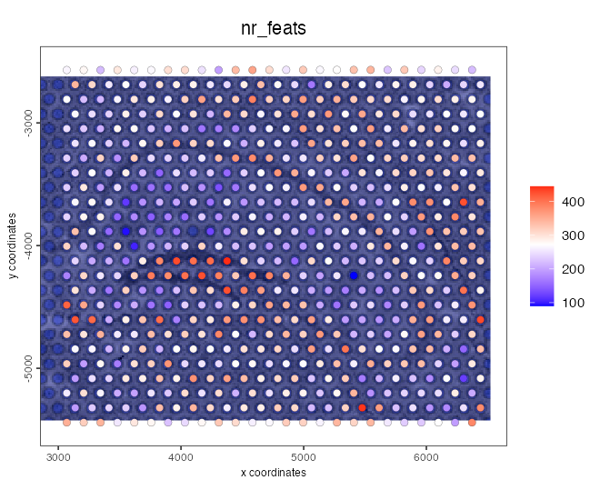
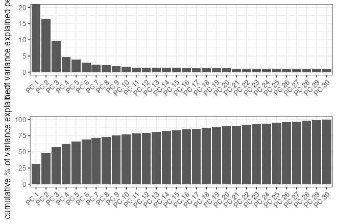
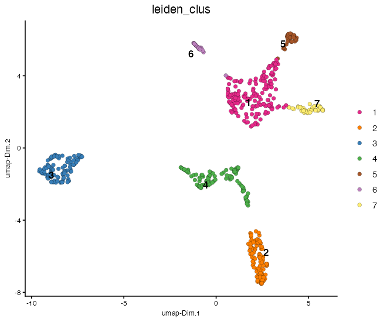
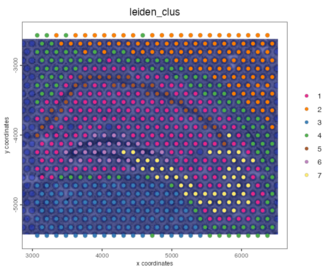
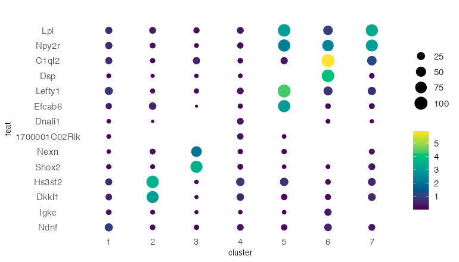
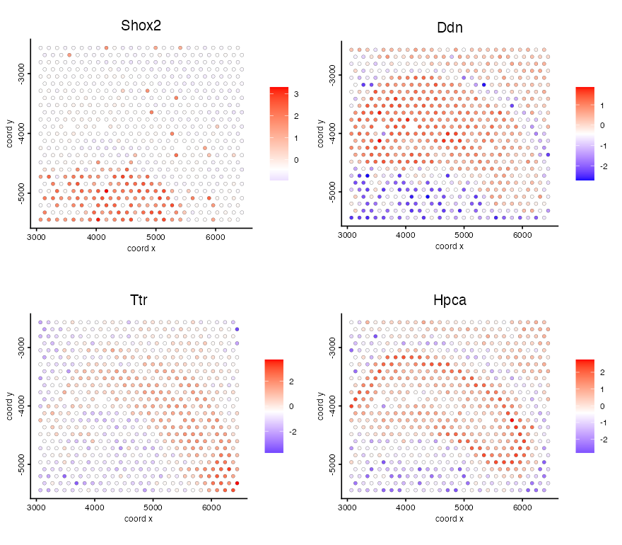
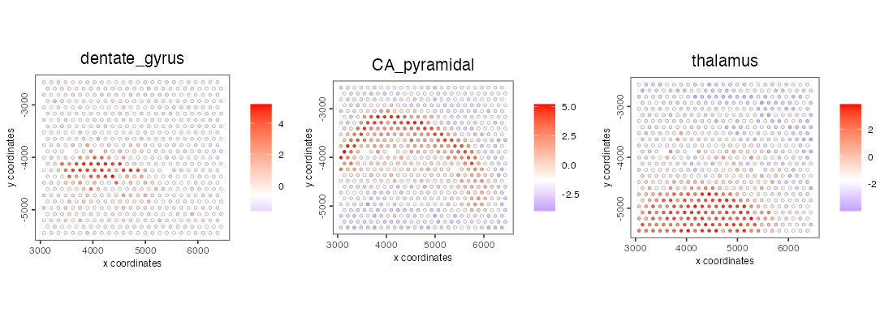

General workflow: grid and spot-based data
Source:vignettes/general_workflow_grid.Rmd
general_workflow_grid.RmdGrid and spot-based technologies (Visium, Visium HD, Stereo-seq) measure expression at fixed capture locations. A spot can hold more than one cell, so the unit of analysis is the spot, and cell types are estimated per spot.
This page runs the main steps of a spatial workflow on a small Visium dataset of the mouse brain (624 spots, 634 genes) from GiottoData. The dataset is small so every step runs in seconds; the results are not meant to be biologically meaningful. The in situ workflow runs the same steps on imaging-based data. The whole page runs in about 10 seconds with at most 2 GB of memory (Apple M4 Max, one R session).
1 Load the data
# Install Giotto Suite once (see the Installation page)
install.packages("GiottoUtils",
repos = c("https://giotto-suite.r-universe.dev", "https://cloud.r-project.org"))
GiottoUtils::suite_install(ref = "disk_full", install_arrow = TRUE)loadGiottoMini() returns a Giotto object with the spot
counts, spot positions and the tissue image. To start from your own
Visium output instead, use createGiottoVisiumObject() (see
the Visium mouse brain
tutorial).
library(Giotto)
g <- GiottoData::loadGiottoMini("visium")
spatPlot2D(g, show_image = TRUE, point_size = 2.5, point_alpha = 0.6)
2 Quality control
addStatistics() adds the number of detected genes
(nr_feats) and the total counts (total_expr)
per spot. Plotting them on the tissue shows whether low quality spots
cluster in one region, for example at a tissue edge or a fold.
g <- addStatistics(g, expression_values = "raw")
spatPlot2D(g, show_image = TRUE, cell_color = "nr_feats",
color_as_factor = FALSE, point_size = 2.5)
filterGiotto() then removes genes detected in fewer than
10 spots and spots with fewer than 100 detected genes.
g <- filterGiotto(g, expression_threshold = 1, feat_det_in_min_cells = 10,
min_det_feats_per_cell = 100)3 Normalization and highly variable genes
normalizeGiotto() normalizes each spot to its library
size, log-transforms and scales the values. calculateHVF()
then flags the genes with the most variable expression; only these are
used for the PCA.
g <- normalizeGiotto(g)
g <- calculateHVF(g, method = "var", n_top_feats = 200)4 Dimension reduction

The scree plot flattens after about 10 components, so the next steps
use the first 10. The nearest neighbour network is built first:
runUMAP() reuses it for the embedding and
doLeidenCluster() clusters on it.
g <- createNearestNetwork(g, type = "kNN", dimensions_to_use = 1:10, k = 15)
g <- runUMAP(g, dimensions_to_use = 1:10, n_neighbors = 15)5 Clustering
g <- doLeidenCluster(g, nn_network_to_use = "kNN", network_name = "kNN.pca",
resolution = 0.5)
plotUMAP(g, cell_color = "leiden_clus", point_size = 2)
spatPlot2D(g, cell_color = "leiden_clus", show_image = TRUE, point_size = 2.5)
6 Marker genes
findMarkers_one_vs_all() compares each cluster with all
other spots. The dot plot shows the top two markers per cluster: dot
size is the percentage of spots that express the gene, color the mean
expression.
markers <- findMarkers_one_vs_all(g, method = "gini",
expression_values = "normalized", cluster_column = "leiden_clus",
min_feats = 5)
top_markers <- markers[, head(.SD, 2), by = "cluster"]
dotPlot(g, feats = unique(top_markers$feats), cluster_column = "leiden_clus")
See differential expression for the other marker methods.
7 Spatially variable genes
Spatial analyses need a spatial network, which connects each spot to
its neighbours. binSpect() then ranks genes by how often
neighbouring spots both express them.
g <- createSpatialNetwork(g, method = "Delaunay")
spatial_genes <- binSpect(g)
spatFeatPlot2D(g, feats = spatial_genes$feats[1:4],
expression_values = "scaled", point_size = 1.5, cow_n_col = 2)
See spatial genes for the other methods and for co-expression modules of spatial genes.
8 Cell type enrichment per spot
Because a spot can hold several cells, cell types are scored per spot
instead of assigned to it. PAGE needs only a list of marker genes per
cell type; here we use a few well-known markers of three mouse brain
regions. PAGE expects more than 5 markers per cell type by default, so
min_overlap_genes is lowered for these short lists.
marker_list <- list(
dentate_gyrus = c("Prox1", "C1ql2", "Dsp"),
CA_pyramidal = c("Hpca", "Fibcd1", "Spink8", "Wfs1"),
thalamus = c("Tcf7l2", "Shox2", "Prkcd"))
sign_matrix <- makeSignMatrixPAGE(sign_names = names(marker_list),
sign_list = marker_list)
g <- runPAGEEnrich(g, sign_matrix = sign_matrix, min_overlap_genes = 2)
spatCellPlot2D(g, spat_enr_names = "PAGE",
cell_annotation_values = names(marker_list), cow_n_col = 3,
point_size = 1.2)
With a single-cell reference, deconvolution estimates the proportion of each cell type per spot instead; see deconvolution and PAGE and rank enrichment.
9 Scale up
The same steps run on full slides when the object is stored on disk with GiottoDisk. These tutorials run them on complete datasets:
10 Further reading
- Spatial domains with BANKSY and HMRF: group spots into tissue regions using their neighbours, beyond the expression clusters found here.
- Deconvolution: estimate cell type proportions per spot from a single-cell reference instead of a marker list.
- Spatial genes: the other spatial gene methods, and modules of co-expressed spatial genes.
11 Session info
sessionInfo()
R version 4.5.3 (2026-03-11)
Platform: aarch64-apple-darwin20
Running under: macOS Tahoe 26.7.3
Matrix products: default
BLAS: /Library/Frameworks/R.framework/Versions/4.5-arm64/Resources/lib/libRblas.0.dylib
LAPACK: /Library/Frameworks/R.framework/Versions/4.5-arm64/Resources/lib/libRlapack.dylib; LAPACK version 3.12.1
locale:
[1] C.UTF-8/C.UTF-8/C.UTF-8/C/C.UTF-8/C.UTF-8
time zone: America/New_York
tzcode source: internal
attached base packages:
[1] stats graphics grDevices utils datasets methods base
other attached packages:
[1] Giotto_4.3.7 GiottoClass_0.8.0
loaded via a namespace (and not attached):
[1] colorRamp2_0.1.0 gridExtra_2.3
[3] rlang_1.3.0 magrittr_2.0.5
[5] GiottoUtils_0.2.11 matrixStats_1.5.0
[7] compiler_4.5.3 systemfonts_1.3.2
[9] vctrs_0.7.3 pkgconfig_2.0.3
[11] SpatialExperiment_1.20.0 fastmap_1.2.0
[13] backports_1.5.0 magick_2.9.1
[15] XVector_0.50.0 magic_1.6-1
[17] labeling_0.4.3 ggraph_2.2.2
[19] ragg_1.5.2 purrr_1.2.2
[21] bluster_1.20.0 cachem_1.1.0
[23] beachmat_2.26.0 jsonlite_2.0.0
[25] DelayedArray_0.36.0 BiocParallel_1.44.0
[27] tweenr_2.0.3 terra_1.9-11
[29] irlba_2.3.7 parallel_4.5.3
[31] cluster_2.1.8.2 R6_2.6.1
[33] RColorBrewer_1.1-3 parallelly_1.47.0
[35] GenomicRanges_1.62.1 scattermore_1.2
[37] Rcpp_1.1.1 Seqinfo_1.0.0
[39] SummarizedExperiment_1.40.0 future.apply_1.20.2
[41] R.utils_2.13.0 IRanges_2.44.0
[43] Matrix_1.7-5 igraph_2.3.4
[45] tidyselect_1.2.1 dichromat_2.0-0.1
[47] abind_1.4-8 viridis_0.6.5
[49] codetools_0.2-20 listenv_0.10.1
[51] lattice_0.22-9 tibble_3.3.1
[53] Biobase_2.70.0 withr_3.0.3
[55] S7_0.2.1 future_1.70.0
[57] polyclip_1.10-7 pillar_1.11.1
[59] MatrixGenerics_1.22.0 geometry_0.5.2
[61] checkmate_2.3.4 stats4_4.5.3
[63] dbscan_1.2.4 plotly_4.12.0
[65] generics_0.1.4 GiottoDisk_0.0.0.8
[67] S4Vectors_0.48.0 ggplot2_4.0.2
[69] sparseMatrixStats_1.22.0 scales_1.4.0
[71] GiottoData_0.3.8 globals_0.19.1
[73] gtools_3.9.5 glue_1.8.1
[75] lazyeval_0.2.2 tools_4.5.3
[77] GiottoVisuals_0.2.16 tilework_1.0.0
[79] BiocNeighbors_2.4.0 data.table_1.18.6.1
[81] RSpectra_0.16-2 ScaledMatrix_1.18.0
[83] graphlayouts_1.2.3 tidygraph_1.3.1
[85] cowplot_1.2.0 grid_4.5.3
[87] tidyr_1.3.2 colorspace_2.1-2
[89] SingleCellExperiment_1.32.0 BiocSingular_1.26.1
[91] ggforce_0.5.0 cli_3.6.6
[93] rsvd_1.0.5 textshaping_1.0.5
[95] S4Arrays_1.10.1 viridisLite_0.4.3
[97] dplyr_1.2.0 uwot_0.2.4
[99] gtable_0.3.6 R.methodsS3_1.8.2
[101] digest_0.6.39 progressr_0.18.0
[103] BiocGenerics_0.56.0 SparseArray_1.10.9
[105] ggrepel_0.9.8 rjson_0.2.23
[107] htmlwidgets_1.6.4 farver_2.1.2
[109] R.oo_1.27.1 memoise_2.0.1
[111] htmltools_0.5.9 lifecycle_1.0.5
[113] httr_1.4.8 MASS_7.3-65